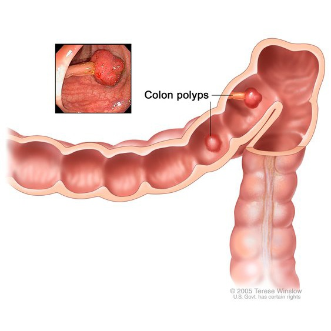

Colonic polyps

SYMPTOMS:
Colon polyps often cause no symptoms. You might not know you have a polyp until your doctor finds it during an examination of your bowel.
But some people with colon polyps experience:
- Rectal bleeding. This can be a sign of colon polyps or cancer or other conditions, such as hemorrhoids or minor tears in your anus.
-
Change in stool color. Blood can show up as red streaks in your stool or make stool appear black. A change in color may also be caused by foods, medications and supplements.
-
Change in bowel habits. Constipation or diarrhea that lasts longer than a week may indicate the presence of a large colon polyp. But a number of other conditions can also cause changes in bowel habits.
-
Pain. A large colon polyp can partially obstruct your bowel, leading to crampy abdominal pain.
-
Iron deficiency anemia. Bleeding from polyps can occur slowly over time, without visible blood in your stool. Chronic bleeding robs your body of the iron needed to produce the substance that allows red blood cells to carry oxygen to your body (hemoglobin). The result is iron deficiency anemia, which can make you feel tired and short of breath.
CAUSES
- Healthy cells grow and divide in an orderly way. Mutations in certain genes can cause cells to continue dividing even when new cells aren't needed. In the colon and rectum, this unregulated growth can cause polyps to form. Polyps can develop anywhere in your large intestine.
-
There are two main categories of polyps, non-neoplastic and neoplastic. Non-neoplastic polyps include hyperplastic polyps, inflammatory polyps and hamartomatous polyps. Non-neoplastic polyps typically do not become cancerous.
-
Inflammatory polyps may be seen with ulcerative colitis or Crohn's disease of the colon. Although the polyps themselves are not a significant threat, having ulcerative colitis or Crohn's disease of the colon increases your overall risk of colon cancer.
-
Neoplastic polyps include adenomas and serrated types. Most colon polyps are adenomas. Serrated polyps may become cancerous, depending on their size and location in the colon. In general, the larger a polyp, the greater the risk of cancer, especially with neoplastic polyps.